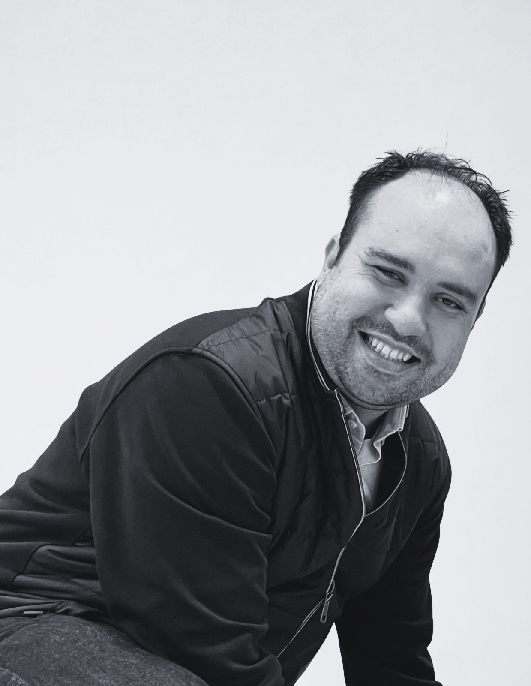

Transpersonal Therapy
Feeling stuck in patterns you can't explain? Transpersonal Therapy goes beyond the surface — exploring meaning, purpose and the deeper layers of your experience.
ExploreGuiding you to your true essence
Transpersonal Therapist • Shamanic Practitioner • Shamanic Counselor.
Sometimes the answers we need go beyond what conventional therapy can reach. A grounded approach to healing and self‑discovery through presence, sound, ritual and integrative psychology.
Services
Tailored 1:1 sessions and group experiences that help you reconnect with your essence, release stagnant energies, and transform limiting narratives into new possibilities. Each session is a safe and supportive space for honest change, clarity and authentic growth.
Featured Programme
A full cycle of transformation — not a single session, but a living process of three ceremonial encounters, continuous support and deep personalised integration spread over 4 to 6 weeks.
Includes session recordings, continuous support & a personalised integration document.
€600 · full programme
I didn't choose this path. It chose me.
I lost two jobs in a row. The financial pressure was immense — bills to pay, a family depending on me, no
clear way forward. It was the darkest period of my life.
It was only when I stopped fighting and accepted the calling with my whole heart that everything began to
change. Today I bring together transpersonal psychology, shamanic traditions and sound — creating a grounded,
compassionate space where honest change, healing and authentic growth can take place.
I know what it feels like to be lost. And I know what it feels like when clarity finally arrives.

Reviews
Real experiences from people who have come through the door — some from across the world.
"I left Brazil to go through this immersion, and it was truly incredible. With Rodrigo's help, I learned that I have all the answers within myself. I managed to learn how to control my anxiety and focus on the 'now,' because we can't control tomorrow. Another very important thing was realizing that other people's problems aren't mine, so I shouldn't let anyone take away my peace. In short, it was the best experience of my life."
Not sure where to start? Book a free 20-minute discovery call — a relaxed, no-pressure conversation to find the right path forward together.
Ireland • Sessions in English and Portuguese.
For Shamanic Counseling, please complete
the pre‑requisite form before booking.